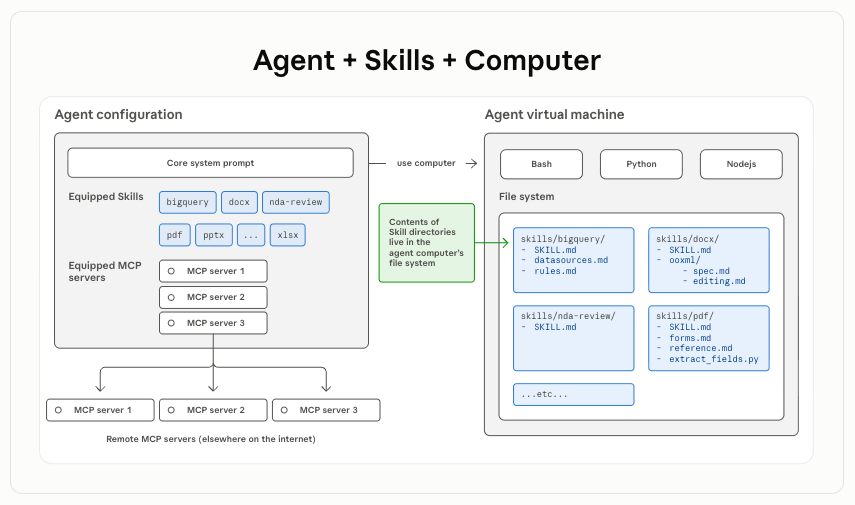
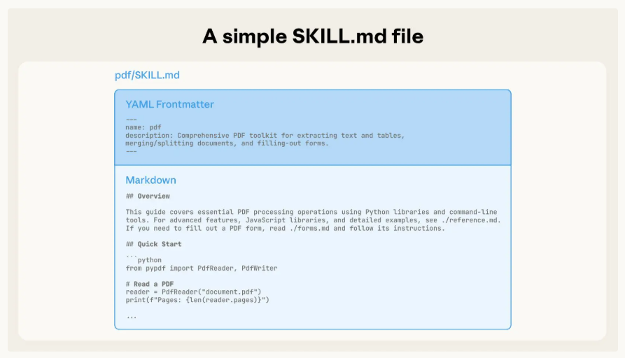
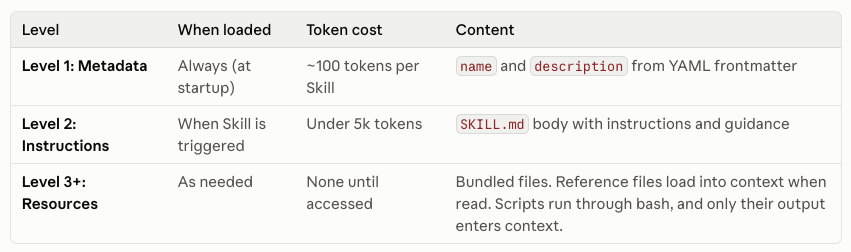
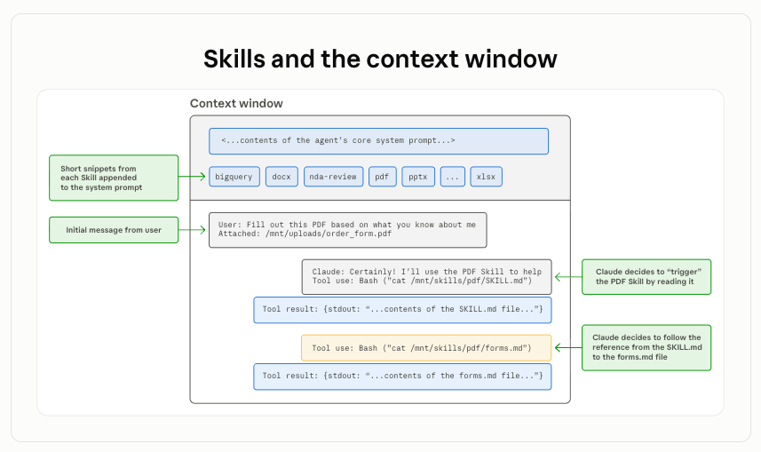
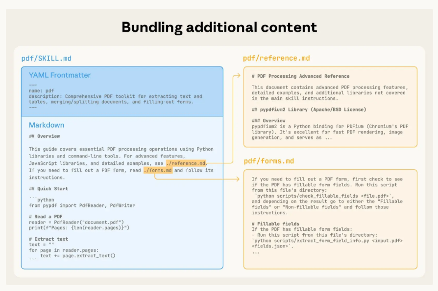
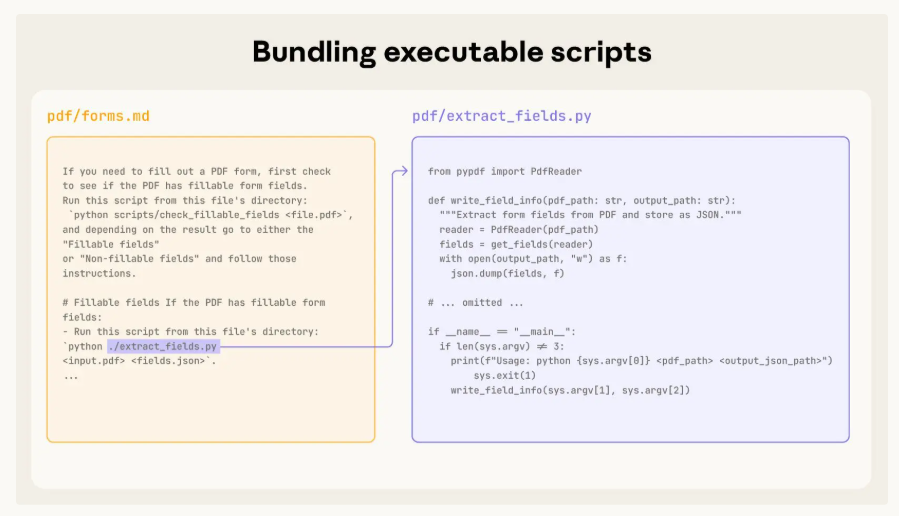

2025 年 10 月，Anthropic 在博客中写下了一句展望：“我们希望未来能让 Agent 自己创建、编辑和评估 Skill。”
2026 年，这个愿景已经通过 skill-creator 落地：它作为官方推出的「元 Skill」，让 Agent 可以用自然语言描述需求，自动生成 SKILL.md、配套脚本和测试用例，并进一步运行评估、对比不同版本、优化 description 触发策略。
到 2026 年 10 月，Agent Skills 被捐赠给 Linux 基金会旗下的 Agentic AI Foundation，已有 70 多个平台集成，累计发布约 100 万个 Skills，安装量接近 2.8 亿次。
这不是一个简单的“Claude 新功能”，而是一次 Agent 能力封装方式的进化。
问题：模型很强，但上下文装不下所有知识
过去两年，AI Agent 的能力边界扩张很快。Claude Code、GitHub Copilot、Cursor 等工具已经能让模型在真实文件系统里执行任务。但一个老问题始终存在：
模型推理能力很强，却缺乏稳定的领域技能；上下文窗口很贵，却装不下所有流程、规范和脚本。
传统做法是为每个场景定制 Agent：写 Prompt、接工具、做编排。它有效，但不可复用、不可移植，也很难规模化。Anthropic 给出的解法是：不要为每个场景造一个“定制智能体”，而是把人的程序性知识打包成 Agent Skills，让 Agent 按需加载。
Skills 架构

Skills 运行在一个代码执行环境中，Claude 在其中具备文件系统访问、Bash 命令执行和代码运行能力。Skill 以目录的形式存在于虚拟机上，Claude 通过 Bash 命令与其交互，就像你在自己的电脑上用命令行浏览文件、执行脚本一样。
一个 Skill 是什么？

一个 Skill 的最小形态非常简单：一个包含 SKILL.md 的目录。
pdf/
├── SKILL.md
├── forms.md
├── reference.md
└── scripts/
├── extract_form_field_info.py
└── fill_fillable_fields.py
其中：
- SKILL.md：必需文件，包含 YAML frontmatter 和 Markdown 正文，定义 Skill 的名称、描述、触发场景和执行步骤。
- references/：可选，存放详细参考文档。
- scripts/：可选，存放可执行脚本，比如 Python、Bash。
- assets/：可选，存放模板、静态资源。
它不是数据库，也不是专有 SDK，而是一套基于文件系统的开放规范。Skill 可以被 Claude Code、Cursor、GitHub Copilot、VS Code、ChatGPT 等多个平台识别和使用。
核心机制：三层渐进式加载

Agent Skills 最关键的设计不是“文件夹里放什么”，而是 如何不把上下文撑爆。
它的做法叫 渐进式加载（Progressive Disclosure）：
- 第一层：元数据（
name、description等），Agent 启动时始终加载； - 第二层：SKILL.md 正文，当 Skill 被触发时加载的指令；
- 第三层：references/、scripts/、assets/ 等资源，执行到具体步骤时按需加载。
启动时，Agent 只会看到每个 Skill 的轻量元数据。它根据 description 判断当前任务是否需要这个 Skill。命中后，才会读取 SKILL.md。如果 SKILL.md 里引用了 forms.md 或某个脚本，Agent 再进一步读取。
这像一本结构良好的技术手册：目录永远可见，章节按需翻开，附录只在需要时查阅。
运行时：Skill 如何被唤醒
Claude 通过文件系统来访问 Skill 的内容。当 Skill 被触发时，Claude 使用 bash 命令从文件系统中读取 SKILL.md，将其中的指令加载到上下文窗口中。如果指令里引用了其他文件（例如 FORMS.md 或数据库 schema），Claude 会继续通过 bash 读取这些文件。当指令涉及可执行脚本时，Claude 通过 bash 运行脚本，并只接收输出结果。脚本代码本身不会进入上下文窗口，从而进一步节省 token。

以自定义的 pdf-processing Skill 为例（区别于预置的 pdf Skill），可以完整看到一次调用的生命周期。
启动阶段，系统提示词中只注入了该 Skill 的元数据：pdf-processing - Extract text and tables from PDF files, fill forms, merge documents. Use when working with PDF files or when the user mentions PDFs, forms, or document extraction. 此时 SKILL.md 的正文并未进入上下文。
当用户提出「Extract the text from this PDF and summarize it」时，Claude 判断该请求命中了这条 description，随即执行 bash: cat pdf-processing/SKILL.md，将指令正文加载进上下文窗口。
加载完成后，Claude 会进一步判断任务范围：本次请求只涉及文本提取，不涉及表单填写，因此 FORMS.md 不会被读取。最终，Claude 仅依据 SKILL.md 中的指令完成任务。
整个过程体现了渐进式加载的实际效果，三层内容按需在各自阶段进入上下文，无关资源始终留在文件系统里，不占用 token。
SKILL.md 如何加载额外内容

SKILL.md 不只是指令文件，也是 Agent 进入 Skill 内部的入口。正文里可以显式引用目录中的其他资源，例如：
如需处理表单，请读取 `forms.md`；
如需执行字段提取，请运行 `scripts/extract_fields.py`。
当 Agent 执行到对应步骤时，它会像查阅手册附录一样，继续读取这些文件。这样，SKILL.md 保持轻量，复杂细节则被拆进 references/、scripts/、assets/ 等子目录。互斥场景不会同时进入上下文，只有真正需要的部分才会被加载。
这也是渐进式加载的关键一环：第一层告诉 Agent 有哪些 Skill，第二层告诉它怎么做，第三层提供按需展开的细节和工具。
代码执行：LLM 做决策，代码做计算

Skills 的另一个重要能力，是把 确定性计算交给代码。
LLM 当然可以排序、解析、计算，但用 token 生成去完成这些工作，成本高、稳定性差。Skill 允许把这类逻辑写成脚本，例如：
python scripts/extract_form_field_info.py input.pdf
脚本在上下文窗口外执行，输入输出不必全部进入对话上下文。这带来两个好处：
- 更省 token：大量数据不需要塞进上下文。
- 更稳定：排序、解析、格式校验等确定性操作交给代码完成。
这其实揭示了一个更清晰的 Agent 架构分工：
LLM 负责理解、规划和决策；代码负责执行、计算和结构化输出。
生态进展：从 Claude 功能到开放标准
Agent Skills 最初随 Claude Code 推出，随后在 2025 年 12 月成为开放标准。
到 2026 年 10 月，Anthropic 将其捐赠给 Agentic AI Foundation，由社区共同治理。
目前，Agent Skills 已被 Cursor、GitHub Copilot、VS Code、ChatGPT 等平台集成，公开 Skills 数量达到约 100 万，安装量接近 2.8 亿次。
这意味着 Skill 不再只是 Claude 的私有功能，而正在成为跨平台的“Agent 通用能力”。
怎么开始写一个 Skill？
如果你是开发者，可以从这几个动作开始：
-
选一个真实任务
不要凭空设计 Skill。从你每天重复的流程开始，比如日志分析、测试报告生成、数据校验、文档格式化。 -
把 SOP 写进
SKILL.md
写清楚：什么时候触发、输入是什么、输出是什么、有哪些步骤、需要注意哪些边界。 -
把复杂逻辑拆进脚本
凡是能用代码稳定完成的，就不要交给模型生成。脚本放在scripts/目录，并在SKILL.md中说明调用方式。 -
按需拆分参考文档
互斥场景不要塞进同一个文件。比如“可填写表单”和“不可填写表单”的处理流程，可以拆成不同文档，避免污染上下文。 -
用失败案例反哺 Skill
让 Agent 跑真实任务，记录它哪里出错、哪里遗漏，再把修正写回 Skill。Skill 不是一次性 Prompt，而是持续迭代的知识资产。
结语
Agent Skills 的价值，不只是让 Claude 更会填表单、更会处理 Excel。它真正改变的是：行业经验、工作流和工具脚本，终于有了一种标准化、可移植、可组合的封装方式。
未来，一个团队的核心资产可能不只是代码仓库，还包括一套经过反复验证的 Skills：合规检查、测试生成、数据清洗、发布流程、运维排查。模型可以更换，平台可以迁移，但这些封装在 Skill 里的程序性知识，会持续沉淀下来。
从“人类写 Skill 给 Agent 用”，到“Agent 自己总结、迭代 Skill”，这条路已经打开。而渐进式加载恰好提供了一个优雅的底层机制：
不把所有知识一次性塞进模型，而是让它在需要时，翻开正确的那一页。
参考资料：https://www.anthropic.com/research/equipping-agents-for-the-real-world-with-agent-skills